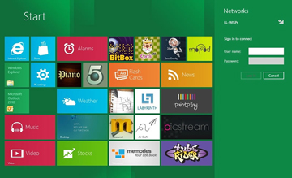

diptimaya sarangi
Thoughts of an inquisitive mind...
Connect:
Hi friends!!! i am Diptimaya Sarangi.You can connect with me on Facebook.
TweetFollow @tdiptimay
News Feeds:

Iphone 5 launched by Apple on Sep.12
Ipad Mini to be possibly lauched in Oct- 
Microsoft finalizes Windows 8 Mobile OS.To be lauched soon
Reviews coming up this week!!!